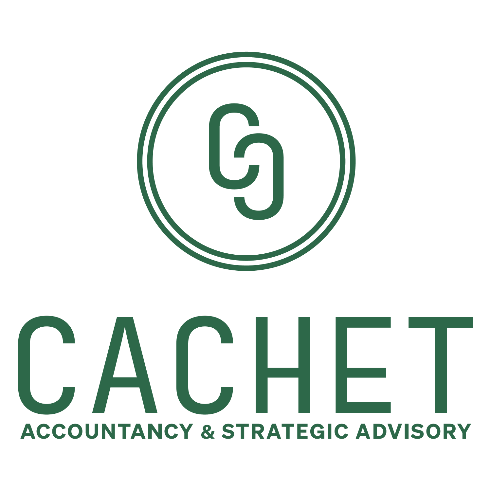

Cachet Advisory: the first three posts
Designed as @cachetadvisory's first content: built entirely in the Cachet brand system, with the real logo, live-site photography, and the firm's own voice. Ready to publish the moment they're approved.
Nothing goes live without approval. These are staged and ready.
← Back to the full recap
Concept 1 single image · persona: Taka
cachetadvisoryBeverly Hills, California
···

The CPA you actually want to text.
Fast replies, plain English, year-round planning.
Let's talk
♥ 💬 ↗
cachetadvisory Most CPAs go quiet the second tax season ends. Cachet doesn't work that way.
We reply fast, explain things in plain English, and stay close enough to catch what's changing before it becomes a problem. That's what a real advisory relationship looks like.
Curious what that's like in practice? Start with a 30-minute clarity session. No pitch, just a real conversation about where things stand.
CTA: Book a 30-minute clarity session (link in bio)
Why first: the ticket's named anchor hook. Warm, human, zero claims risk. Sets the relationship-first tone for everything after it.
Concept 2 carousel, 4 slides, swipe it · persona: Debby
cachetadvisoryBeverly Hills, California
···
Filing vs. advisory
Most accounting firms feel like the DMV in a nicer shirt.
1 / 4
You wait. You get a form. You get jargon back.
2 / 4
Cachet is built to be the opposite:
Fast replies. Plain English. A team that's actually in your corner.
3 / 4
That's the whole difference between a filing relationship and an advisory one.
◄ swipe ►
♥ 💬 ↗
cachetadvisory If your CPA only shows up in April with a form and some jargon, that's not a relationship. That's a transaction with a deadline attached.
Cachet works differently. We stay close to your numbers year-round, explain what's actually happening in plain English, and reply before you have to chase us down.
Want to see what that feels like? Book a 30-minute clarity session and find out.
CTA: Book a clarity session (link in bio)
Why first: sharpest on-voice category contrast, fully source-backed. Carousels earn the most reach for new accounts.
Concept 3 quote card, myth-bust · persona: Marsha
cachetadvisoryBeverly Hills, California
···
Myth vs. reality
Making more money and keeping more money are not the same skill.
Book a clarity session
♥ 💬 ↗
cachetadvisory Myth: if your income is up, your financial picture is automatically in good shape.
Reality: more income usually means more moving pieces. Entities, timing, cash flow, deductions, the next big decision. Without someone looking at the whole picture, complexity is easy to outrun and easy to get behind on.
That's the work Cachet does before it becomes urgent. Not reactive filing. Actual planning.
Start with a 30-minute clarity session and see where your picture stands.
CTA: Book a clarity session (link in bio)
Why first: proves technical seriousness early. Speaks straight to the complexity trigger that brings Marsha/Debby-type clients in.